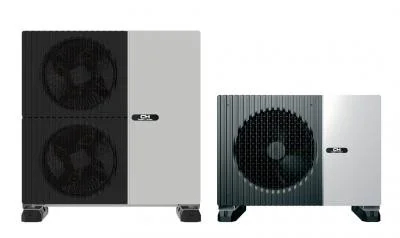

COOPER & HUNTER · CSEFU KLÍMA
CH-HP15UIMPZM-H
Az otthon vízkörös fűtéséhez kapcsolódó berendezés. A meglévő hőleadók, a hőigény és az elektromos háttér alapján választunk megfelelő rendszert.
Erről a készülékről kérek ajánlatotCsak készülékvásárláshoz is kérhet ajánlatot. Az aktuális ár és elérhetőség egyeztetés alapján.

AMIT A MINDENNAPOKBAN ÉREZ
Mit érdemes tudnia róla?
- Összehangolt fűtési rendszer. A hőszivattyú mellé megfelelő vízkör, hőleadók és szabályozás szükséges. Radiátoros rendszer esetén a szükséges vízhőmérséklet is számít.
- Telefonról is vezérelhető. A Wi-Fi kényelmes távoli beállítást tesz lehetővé. A szükséges hálózatot és az alkalmazást az átadáskor egyeztetjük.
A kW a készülék teljesítménye, nem az óránkénti villanyfogyasztás. A szoba mérete mellett a szigetelés, a tájolás és a használat is számít.
A gondos telepítéshez az elhelyezést, a csővezetést és a műszaki előkészítést is átbeszéljük. Így dolgozik Gyuri
A LEGFONTOSABB ADATOK
A választás kapaszkodói
- Teljesítmény a gyártói kínálatban
- 15 kW
- Energia osztály
- A+++/A+++
- Wi-Fi vezérlés
- igen
- Hatékonyság SCOP érték
- 5.2
- Hűtőközeg
- R290
- Típus / katalóguskód
- CH-HP15UIMPZM-H_R290
Az energiaosztályt a gyártói oldal jelölése szerint közöljük. A mérési körülmények és az üzemmód is számít; önmagában nem garantál fogyasztási értéket. Méreteknél az adatlap mértékegysége és sorrendje irányadó.
A gyártói oldalon szereplő garancia: 3 év garancia. A pontos jótállási feltételeket, a szükséges regisztrációt és karbantartást vásárlás előtt egyeztetjük.
Forrás: C&H magyar termékoldal · Ellenőrizve: 2026. október 9. A gyártó módosíthatja a kínálatot és az adatokat; a pontos konfigurációt az ajánlatban rögzítjük.
Ez lehet az Ön készüléke?
Írja meg, hol és mire használná. A típust és a kivitelezést együtt egyeztetjük.